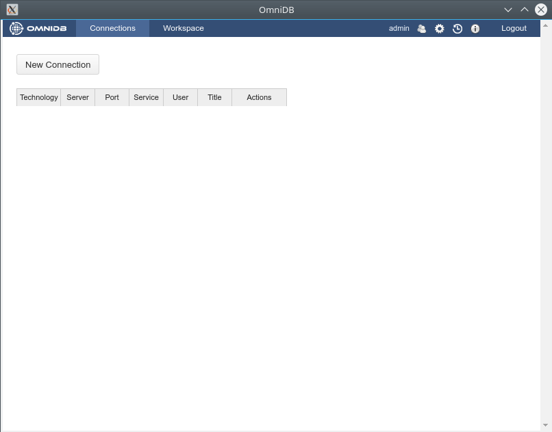

OmniDB provides 2 kinds of packages to fit every user needs:
Both application and server can be installed on the same machine.
In order to run OmniDB app, you don't need to install any additional piece of software. Just head to omnidb.org and download the latest package for your specific operating system and architecture:
If you choose tarball or zip packages, just extract it somewhere in your computer. Get inside the folder it creates and run the omnidb-app executable. It will open OmniDB inside its own window.
With the installer you can install OmniDB in your system, and it will be available through your desktop environment application menu. When you launch it, OmniDB will open its own window.

Like OmniDB app, OmniDB server doesn't require any additional piece of software and the same options for operating system and architecture are provided.
If you choose the tarball or zip package, extract it somewhere in your computer. Get inside the uncompressed folder and run the omnidb-server executable.
user@machine:~$ cd omnidb-server
user@machine:~/omnidb-server$ ./omnidb
Starting OmniDB 2.0.2 at http://localhost:8000
Open OmniDB in your favorite browser
Press Ctrl+C to exitIf you installed OmniDB server with some installer option, you will need administrator privileges:
user@machine:~$ sudo omnidb-server
Starting OmniDB 2.0.2 at http://localhost:8000
Open OmniDB in your favorite browser
Press Ctrl+C to exitNow that the web server is running, you may access OmniDB web app on your favorite browser. Type in address bar: localhost:8000 and hit Enter. If everything went fine, you shall see a page like this:
Now you know that OmniDB is running correctly. In the next chapters, we will see how to login for the first time, how to create an user and to utilize OmniDB.